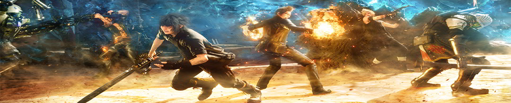
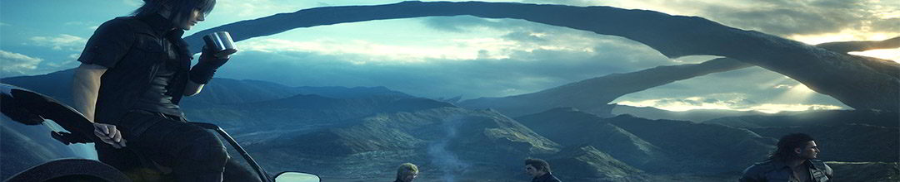

Final Fantasy XV is an open world action role-playing video game developed and published by Square Enix for the PlayStation 4, Xbox One and Microsoft Windows. Being the fifteenth main installment in the Final Fantasy series, the game was released for the PS4 and Xbox One in November 2016, and will be released for Windows in early 2018.
The game features an open-world environment and action-based battle system, incorporating the ability to switch weapons and other elements such as vehicle travel and camping.
Elemental magic is available from the start, and ring magic is unlocked in the thirteenth chapter. They either consume an enemy's life-force to heal Noctis, damage foes,or eradicate all foes in the area.
Astrals canonly be summoned by Noctis. They are acquired through story events. The summons are the strongest attacks the player can perform, and deal damage to all enemies in battle
Ascension doesn't only affect combat, but can also be used to extend buffs obtained from food cooked at camp, which will make Noctis sprint longer, among various other effects.
Enroute to wed his fiancée Luna on a road trip with his best friends, Prince Noctis is advised by news reports that his homeland has been invaded and taken over under the false pretense of a peace treaty – and that he, his loved one and his father King Regis, have been slain at the hands of the enemy.
To gather the strength needed to uncover the truth and reclaim his homeland, Noctis and his loyal companions must overcome a series of challenges in a spectacular open world - that is filled with larger-than-life creatures, amazing wonders, diverse cultures and treacherous foes.